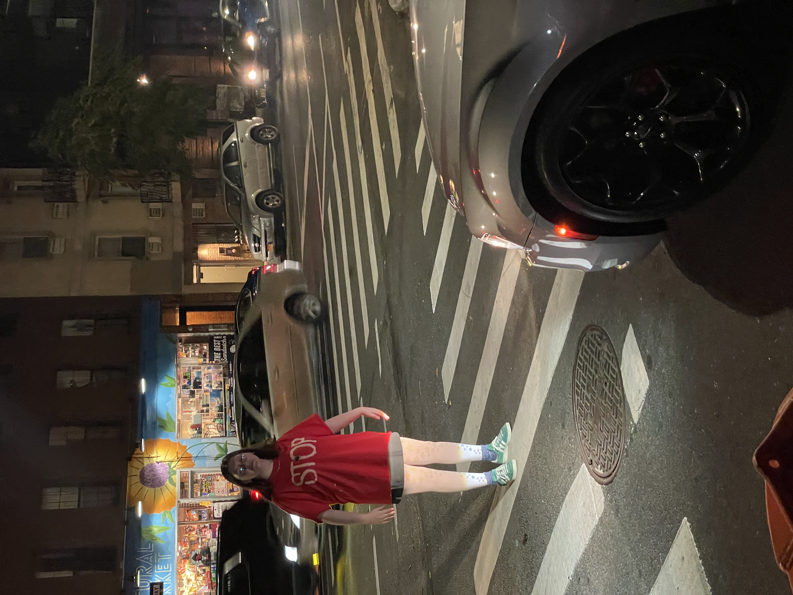

For all four years of high school and two years of college I was Marge Simpson for Halloween. The costume would get progressively better, but my philosophy with Halloween costumes is that it should be clever enough to where you can just wear plain clothes and people will get it. I'm not going to buy a wig. I'm not going to paint my skin yellow.
One year I broke the cycle and was a stop sign. Chloe made me stand in the middle of the street.
